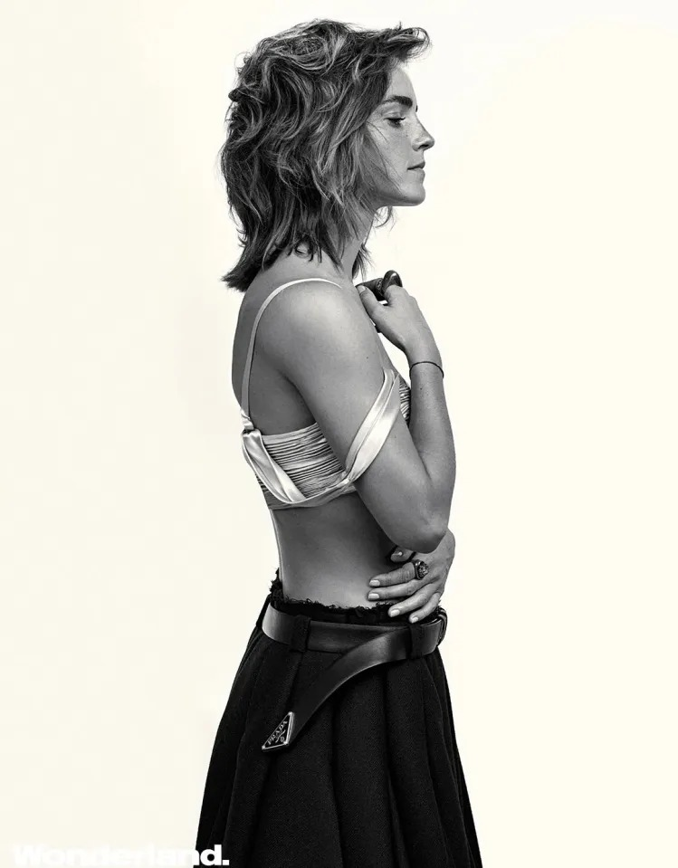

Starts Our Shared Shelf, a feminist book club that met online. The first pick is Gloria Steinem's My Life on the Road.
Unofficial fan site
Emma Watson turns the page.
Not a celebrity page.
A fan's tribute to an actor, an activist and a reader.
Enter the story →
At a glance
Born in Paris on 15 April 1990 and cast as Hermione Granger at nine. A Brown University graduate and, since 2014, a UN Women Goodwill Ambassador.
01 · The roles
Twenty years, one page at a time.
- 2001–11Harry Potter, eight filmsHermione Granger
- 2007Ballet ShoesPauline Fossil · TV film
- 2008The Tale of DespereauxPrincess Pea · voice
- 2011My Week with MarilynLucy
- 2012The Perks of Being a WallflowerSam
- 2013The Bling RingNicki
- 2013This Is the EndHerself
- 2014NoahIla
- 2015ColoniaLena
- 2015RegressionAngela Gray
- 2017Beauty and the BeastBelle
- 2017The CircleMae Holland
- 2019Little WomenMeg March
02 · The cause
A speech that became a movement.
Each star is a milestone in her work for gender equality.
- July 2014
UN Women Goodwill Ambassador
Appointed by UN Women to champion gender equality and young women's education.
- 20 September 2014
HeForShe
Launches the campaign with a speech at UN headquarters in New York, inviting men and boys to stand up for equality.
- January 2015
Davos
Speaks at the World Economic Forum to launch the HeForShe IMPACT 10x10x10 initiative.
- 2018
Justice and Equality Fund
Donates £1 million to the UK Justice and Equality Fund, set up in support of the Time's Up movement.
03 · The reader
A shelf shared with strangers.
Hides copies of Maya Angelou's Mom & Me & Mom on the London Underground with Books on the Underground, each with a handwritten note.
Graduates from Brown University with a degree in English literature.
04 · Portraits
Gold in every frame.





Swipe or scroll sideways
05 · In her words
Quotes from her HeForShe speech
Both men and women should feel free to be sensitive. Both men and women should feel free to be strong.
Gender equality is your issue too.
If not me, who? If not now, when?
Emma Watson · HeForShe speech · United Nations, New York · 20 September 2014
06 · Leave a note
Write something in gold.
Notes go on a shared wall that everyone with this page can read.
The next page is hers.
Unofficial fan site. Not affiliated with Emma Watson or her representatives, UN Women or HeForShe. Made by Veer Singh.
The painting is an original artwork made for this tribute with Artlist; its figures are anonymous, not portraits. Photographs belong to their photographers and publishers, including Wonderland and Hollywood Authentic. Quotes are from her HeForShe speech at the United Nations on 20 September 2014.